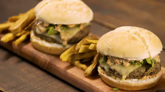
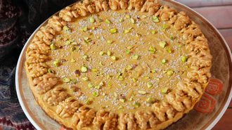
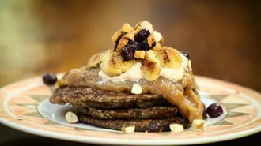
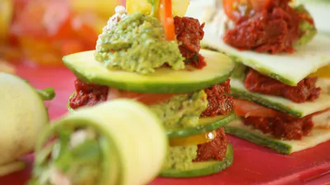
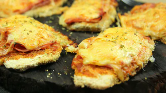
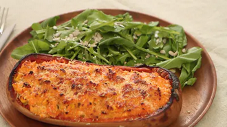

Recetas Saludables
-

Simple y sabrosa, una opción saludable para disfrutar de una hamburguesa
-

¡Sorpresa Dulce! Nico nos enseña a hacer un Pastel de Calabaza, súper nutritivo e ideal como postre después de una cena.
-

Panqueques a base de banana, harina y coco. Ideales para acompañar tu desayuno o cuando quieras algo dulce. ¡Una receta muy simple y llena de nutrientes!.
-

Aprende a preparar una Lasaña Vegana con ingredientes frescos y naturales junto a Nico.
-

Milanesas un poco más saludables.
-

Calabaza Rellena: simple, sabrosa e ideal para compartir en familia o con amigos. ¿Se animan a hacerla en su casa?.